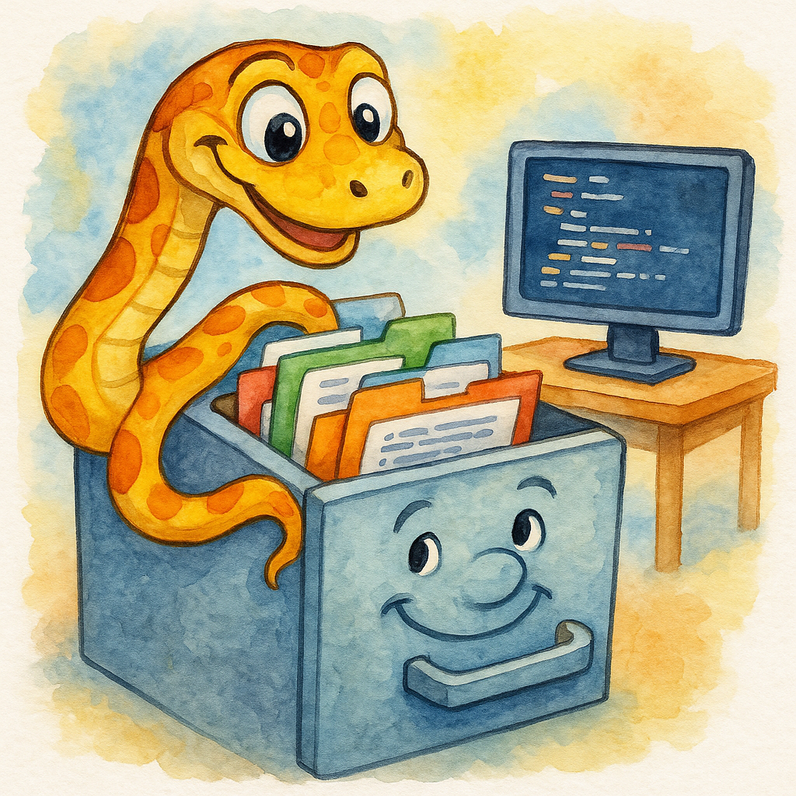

exit🚀 Hey there! I’m learning Python possibly just like you, and I’ve started to learn about file handling. Today, I’m excited to share what I’ve learned so far about reading and writing files using Python’s
pathlibandosmodules. Let’s go!
Introduction
When I first started learning Python, working with files seemed intimidating and sometimes it still does. Where do I find files? How do I create paths that work on different computers? What’s the difference between all these modules?
After lots of experimenting (and making mistakes!), I’ve discovered that Python offers two main approaches: the traditional os module and the modern pathlib module. Today, we’ll cover both, and you can decide which approach you like best.
Understanding File Paths: The Foundation
Before we get into code, let’s understand what a file path actually is. Think of it like a street address for your files:
# Windows path example
C:\Users\YourName\Documents\my_file.txt
# Mac/Linux path example
/Users/YourName/Documents/my_file.txtNotice the difference? Windows uses backslashes (\) while Mac and Linux use forward slashes (/). This used to give me headaches (even in my R code) until I discovered pathlib!
The Magic of pathlib: Object-Oriented File Handling
Getting Started with Path Objects
The pathlib module treats paths as objects, not just strings. Here’s how we create a path:
from pathlib import Path
# Create a Path object
my_path = Path('folder/subfolder/file.txt')
print(my_path) # Works on all operating systems!folder\subfolder\file.txtThe “/” Operator: Your New Best Friend
One of the coolest features I discovered is the / operator. Instead of worrying about path separators, we can join paths like this:
from pathlib import Path
base = Path('documents')
file_path = base / 'projects' / 'readme.txt'
print(file_path) # documents/projects/readme.txtdocuments\projects\readme.txtThis works on all operating systems - Windows, Mac, and Linux! No more worrying about backslashes or forward slashes.
Important Path Attributes
When working with files, I often need to extract different parts of a path. Here’s a handy table I created while learning:
| Attribute | What It Does | Example Output |
|---|---|---|
.name |
Gets the full filename | 'document.txt' |
.stem |
Gets filename without extension | 'document' |
.suffix |
Gets the file extension | '.txt' |
.parent |
Gets the parent directory | Path('folder/subfolder') |
.drive |
Gets the drive letter (Windows) | 'C:' |
Let me show you these in action:
from pathlib import Path
file_path = Path('C:/Users/Documents/report.pdf')
print(file_path.name) # report.pdfreport.pdfprint(file_path.stem) # reportreportprint(file_path.suffix) # .pdf.pdfprint(file_path.parent) # C:/Users/DocumentsC:\Users\Documentsprint(file_path.drive) # C: (on Windows)C:Finding Your Way: cwd() and home()
Two methods I use constantly are cwd() (current working directory) and home():
from pathlib import Path
# Where am I right now?
current_dir = Path.cwd()
print(f"I'm currently in: {current_dir}")I'm currently in: C:\Users\ssanders\Documents\GitHub\steveondata\posts\2025-07-23# Where's my home directory?
home_dir = Path.home()
print(f"My home directory is: {home_dir}")My home directory is: C:\Users\ssandersReading and Writing Files: The Easy Way
Writing Text Files
Here’s the simplest way I’ve found to write text to a file:
# Create a path
file_path = Path('my_notes.txt')
# Write text (creates the file if it doesn't exist)
file_path.write_text('Hello, Python!\nThis is my first file.')37print("File created successfully!")File created successfully!Reading Text Files
Reading is just as easy:
# Read the file we just created
content = file_path.read_text()
print(content)Hello, Python!
This is my first file.The Traditional Way with open()
Sometimes you need more control. Here’s how to use open() with pathlib:
from pathlib import Path
file_path = Path('example.txt')
# Writing
with open(file_path, 'w') as file:
file.write('Line 1\n')
file.write('Line 2\n')7
7# Reading
with open(file_path, 'r') as file:
content = file.read()
print(content)Line 1
Line 2Checking Files and Directories
Before working with files, I always check if they exist:
from pathlib import Path
file_path = Path('important_file.txt')
if file_path.exists():
if file_path.is_file():
print("It's a file!")
elif file_path.is_dir():
print("It's a directory!")
else:
print("File doesn't exist yet")File doesn't exist yetpathlib vs os: A Comparison
When I started learning, I was confused about when to use pathlib vs os. Here’s a comparison table I made:
| Task | pathlib | os module |
|---|---|---|
| Join paths | Path('folder') / 'file.txt' |
os.path.join('folder', 'file.txt') |
| Current directory | Path.cwd() |
os.getcwd() |
| File exists? | path.exists() |
os.path.exists(path) |
| Is it a file? | path.is_file() |
os.path.isfile(path) |
| Get filename | path.name |
os.path.basename(path) |
| Get parent | path.parent |
os.path.dirname(path) |
As you can see, pathlib is often cleaner and more intuitive!
Error Handling: Learning from Mistakes
I’ve learned (the hard way!) that files don’t always exist when we expect them to. Here’s how to handle errors gracefully:
try:
file_path = Path('missing_file.txt')
content = file_path.read_text()
except FileNotFoundError:
print("Oops! File not found. Let me create it...")
file_path.write_text("New file created!")
except PermissionError:
print("I don't have permission to access this file")Practical Examples: Putting It All Together
Example 1: Creating a Simple Note-Taking App
# Set up our notes directory
notes_dir = Path.home() / 'MyNotes'
notes_dir.mkdir(exist_ok=True) # Create if doesn't exist
# Create a new note
note_name = input("Enter note name: ")
note_path = notes_dir / f"{note_name}.txt"
# Write content
content = input("Enter your note: ")
note_path.write_text(content)
print(f"Note saved to: {note_path}")Example 2: Finding All Text Files
from pathlib import Path
# Find all .txt files in current directory
current_dir = Path.cwd()
txt_files = list(current_dir.glob('*.txt'))
print("Text files found:")Text files found:for file in txt_files:
print(f" - {file.name}") - example.txt
- missing_file.txt
- my_notes.txtWorking with Different File Modes
Here’s a reference table for file modes I keep handy:
| Mode | What It Does | Creates New? | Overwrites? |
|---|---|---|---|
'r' |
Read only | No | No |
'w' |
Write only | Yes | Yes |
'a' |
Append to end | Yes | No |
'x' |
Write, fail if exists | Yes | No |
Your Turn! 🎯
Let’s practice what we’ve learned. Create a Python script that:
- Creates a directory called “practice_files”
- Creates three text files with different content
- Lists all files in the directory
- Reads and prints the content of each file
Click here for Solution!
from pathlib import Path
# 1. Create directory
practice_dir = Path('practice_files')
practice_dir.mkdir(exist_ok=True)
# 2. Create three files
files_data = {
'file1.txt': 'This is the first file',
'file2.txt': 'This is the second file',
'file3.txt': 'This is the third file'
}
for filename, content in files_data.items():
file_path = practice_dir / filename
file_path.write_text(content)22
23
22# 3. List all files
print("Files in practice_files:")Files in practice_files:for file in practice_dir.glob('*'):
print(f" - {file.name}") - file1.txt
- file2.txt
- file3.txt# 4. Read and print content
print("\nFile contents:")
File contents:for file in practice_dir.glob('*.txt'):
content = file.read_text()
print(f"{file.name}: {content}")file1.txt: This is the first file
file2.txt: This is the second file
file3.txt: This is the third fileQuick Takeaways 📌
- Use
pathlibfor modern, cross-platform file handling - The
/operator makes joining paths super easy Path.cwd()tells you where you are.name,.stem,.suffixextract parts of filenames- Always handle errors when working with files
with open()ensures files are properly closed
Conclusion
Working with files in Python has become so much easier since I discovered pathlib. While the os module is still useful (and you’ll see it in older code), pathlib offers a cleaner, more intuitive approach that works seamlessly across different operating systems.
Remember, we’re all learning together! Start with simple file operations, practice regularly, and don’t be afraid to experiment. The more you work with files, the more natural it becomes.
What’s Next? Try creating your own file management scripts! Start simple - maybe a script to organize your downloads folder or create daily journal entries. The possibilities are endless!
FAQs
Q: Should I always use pathlib instead of os? A: For new code, yes! pathlib is more modern and easier to use. However, you might need os for some system operations that pathlib doesn’t cover.
Q: What’s the difference between Path.cwd() and os.getcwd()? A: They do the same thing, but Path.cwd() returns a Path object while os.getcwd() returns a string.
Q: Can I use pathlib with older Python versions? A: pathlib was introduced in Python 3.4. For older versions, you’ll need to use os.path.
Q: How do I create nested directories? A: Use path.mkdir(parents=True, exist_ok=True) to create parent directories if they don’t exist.
Q: What’s the best way to handle large files? A: For large files, read them in chunks using a loop rather than loading everything into memory at once.
References
Happy Coding! 🚀

You can connect with me at any one of the below:
Telegram Channel here: https://t.me/steveondata
LinkedIn Network here: https://www.linkedin.com/in/spsanderson/
Mastadon Social here: https://mstdn.social/@stevensanderson
RStats Network here: https://rstats.me/@spsanderson
GitHub Network here: https://github.com/spsanderson
Bluesky Network here: https://bsky.app/profile/spsanderson.com
My Book: Extending Excel with Python and R here: https://packt.link/oTyZJ
You.com Referral Link: https://you.com/join/EHSLDTL6